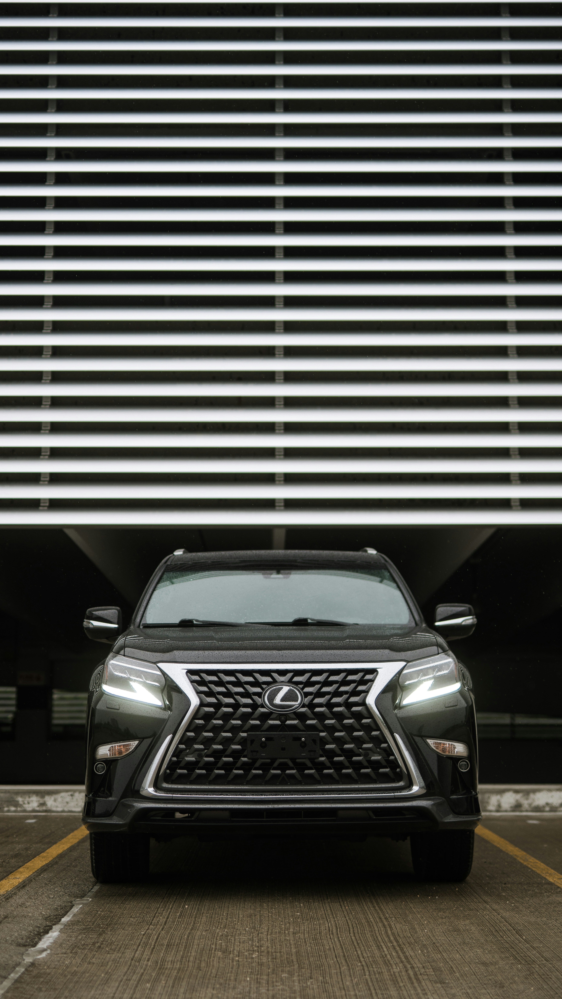

Preparation
Pickup points, timing, passengers and route details are understood before the trip begins.
AAZ Global Logistics & Autos provides pre-arranged chauffeur transportation for people who want the road, timing and vehicle arrangement handled with care.

The experience starts before the journey: understanding the pickup, destination, schedule, passenger needs and the most suitable vehicle arrangement.
AAZ is based in Abuja and can be requested for travel to destinations across Nigeria. Longer journeys and international travel can be considered in advance when route, vehicle and practical requirements allow.
Pickup points, timing, passengers and route details are understood before the trip begins.
The vehicle arrangement should fit the route, passenger count, luggage and purpose of travel.
The goal is a calm, respectful experience from the first message through arrival.
Road travel is not always one-size-fits-all, so longer and more involved itineraries are discussed individually.
Hotels, companies, event organisers and visiting teams may need more than a single point-to-point ride. Share the schedule and AAZ can discuss a dedicated arrangement.
Discuss a journey